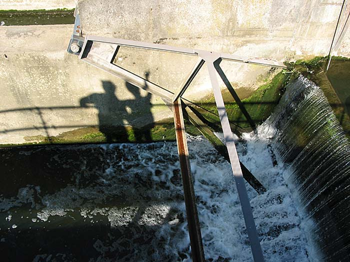

	<div id="oneCol" class="row">
    <div class="large-12 columns">
        <div class="medium-10 medium-offset-1 end columns">
      <h3>In-between Spaces</h3>
      <p>A study of memory loss in people with early onset dementia. A year and a half collaboration with two local Oxfordshire support groups, <a href="../../links/index.html">The Clive Project</a> (now known as Young Dementia UK) and <a href="../../links/index.html">SPECAL</a>. Some Clive Project members chose to take their own photographs and / or tell their story through images, words and video. The former expressions were made into a book, an essential part of an Exhibition which took place in May 2006 at the Jacqueline du Pr&eacute; Music Building, Oxford.</p>
		</div>
		<div class="center">
        <a href="inbetween002.html" title="View next In-between Spaces photograph"></a>


    <span class="links"><a href="inbetween001.html">next</a></span>

   		</div>
    </div>

</div>

